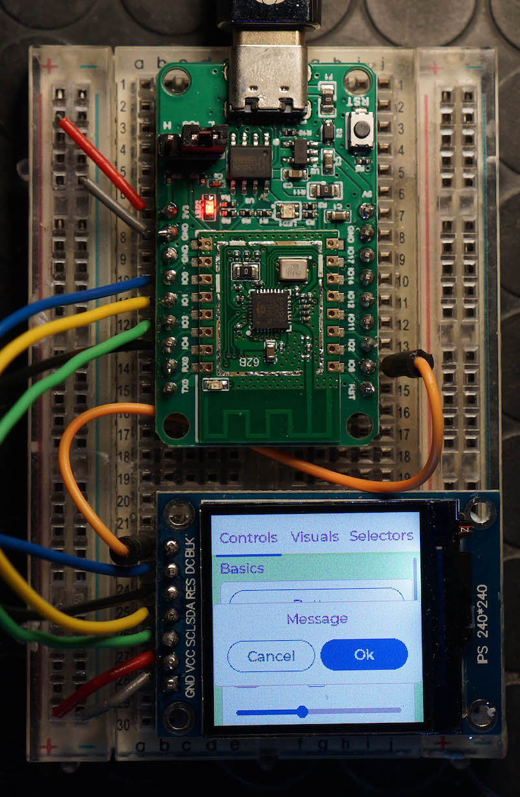

L3: 用户态进程 (uproc)
本实验在 L2 代码的基础上完成。但如果你几乎没有完成 L2 (例如没有正确实现同步操作，或是只支持单处理器)，依然可以开始 L3 并通过部分测试用例。 在命令行中
git pull origin L3下载框架代码。(请等待发布)
本次实验提交时，需要设置环境变量 (如果你将 export 写在了 Makefile 里，需要相应作出修改，否则将提交到过往的实验)。MODULE为L3本次实验的报告直接在
kernel/目录下原先的实验报告基础上添加。拒绝内卷：除非特殊情况，本次实验的实验报告不建议超过 2 页 A4 纸。请在实验报告中描述你在实验中遇到的特别值得一提的事件，例如你代码的架构设计、特别精巧的实现、遇到印象深刻的 bug 等。
1. 背景
在上一个实验中，我们已经实现了现代多处理器硬件上的一个 “嵌入式” 操作系统——它能够以抢占的方式调度多个直接运行在内核态的线程，从而实现处理器的时分复用。如果你的计算机硬件没有 MMU，你的 Lab2 已经是相当豪华的了，它有设备驱动程序，能实现分时，完全可以在一些嵌入式 GUI 框架下支撑应用程序的运行：

是的，你看到的许多嵌入式设备，例如智能手环的 “操作系统”，都是运行在这类没有 MMU、 超低功耗处理器上的。甚至 Linux Kernel 也可以在没有 MMU 的机器上有限度的运行。
当然，如果你想通过更复杂的操作系统 (例如 Linux) 支持更复杂的软件，硬件 MMU 则是很重要的选项：它提供了进程隔离和存储保护机制。因此，是时候在实验中给线程戴上 MMU 提供的 VR 眼镜，使得线程：
- 运行在较低的权限级别，从而在执行任何敏感操作时都会将控制权通过异常机制交给操作系统。
- 无法直接看到物理地址，访问任何地址，包括取 PC 处的指令、load/store 内存等，全部要经过 VR 眼镜的转译。VR 眼镜被操作系统配置为一个数据结构，且只有操作系统才有权修改。
这样我们就得到了进程。在这个实验里，你会将你的 “嵌入式操作系统” 变成一个和 UNIX 几乎 “无限接近” 的真正操作系统，进程可以在用户态运行，并且因为中断/异常/系统调用后，操作系统能够正确地处理它们。
2. 实验描述
2.1 实验总览
这个实验在 pmm 和 kmt 的基础上，增加用户态的进程 (可以理解为拥有地址空间的进程)。在这个实验中，你的操作系统将会加载第一个用户态进程 (进程的代码 “硬编码” 在操作系统启动时的内存中)，并且允许用户态进程执行系统调用。具体来说，除 uproc 模块的初始化 (init) 之外，你需要实现以下系统调用：
MODULE(uproc) {
void (*init)();
int (*kputc)(task_t *task, char ch);
int (*fork)(task_t *task);
int (*wait)(task_t *task, int *status);
int (*exit)(task_t *task, int status);
int (*kill)(task_t *task, int pid);
void *(*mmap)(task_t *task, void *addr, int length, int prot, int flags);
int (*getpid)(task_t *task);
int (*sleep)(task_t *task, int seconds);
int64_t (*uptime)(task_t *task);
};
系统调用的行为基本遵循简化的 Linux 系统调用行为，我们会在之后进行补充说明。
2.2 用户进程 (uproc) 模块
2.2.1 init - 模块初始化
完成必要的初始化。你需要手动在你的 os->init 中调用它。
值得注意的是，本实验需要 AbstractMachine 的 VME (VM Extension)，VME 初始化 (vme_init) 时需要页面分配和回收的函数，并且会立即就地调用。请你确在适当的地方完成 VME 的初始化，例如
vme_init(pmm->alloc, pmm->free);
这个初始化可以在 uproc->init 中完成。
2.2.2 kputc - 打印调试字符
这是最简单的系统调用，可以在内核打印出一个用户态数据。在此基础上，你可以实现 printf 更好地观察用户程序和内核之间的交互。在实现文件系统 (printf 实际调用的是像 stdout 文件描述符的 write 系统调用) 之后，kputc 就显得多余了，但一个 “最简单” 的系统调用在系统刚开始实现时是非常有用的——它可以帮助你快速观察系统/用户进程是否在正常运行。我们甚至可以直接给出它的参考实现：
int kputc(task_t *task, char ch) {
putch(ch); // safe for qemu even if not lock-protected
return 0;
}
2.2.3 getpid - 获得进程号
int getpid(task_t *task);
返回当前进程的进程号。进程号从 1 开始编号，不超过 32767。你需要保证若干进程号相关的基本性质：
- 任何进程从创建开始，进程号不会变化，即同一进程多次调用 getpid 会返回同一个数值。
- 系统中每个进程都有不同的进程号。
- 进程号在分配时，尽量做到尽可能不立即复用之前被杀死进程的进程号——试想一下，你在 Shell 中使用 ps 命令查看某个进程编号为 1234 并且希望将它杀死——但就在你执行 kill 1234 的间隙之间，1234 进程退出，并且另一个 (例如系统服务创建的进程) 进程被分配了 1234 的进程号，你就会 “错杀”。
2.2.4 sleep - 进程睡眠
int sleep(task_t *task, int seconds);
将进程睡眠 seconds 秒后再次唤醒——完全严格时间的睡眠是做不到的，你只需要保证唤醒前后不小于 seconds 秒 (允许略多一些)。进程睡眠时不应占用 CPU——否则 sleep sort 就无法实现了。
2.2.5 uptime - 获得开机时间
int64_t uptime(task_t *task);
返回开机时间的毫秒数，应用程序可以用此数值作为参考，同样不必完全精确。
2.2.6 fork - 创建进程副本
int fork(task_t *task);
创建当前进程 (状态机) 的一个副本：
- 创建的进程从用户态执行看来没有任何区别，除了 GPRx (rax) 的返回值：父进程返回子进程进程号，子进程返回 0。
- 你需要实现 Copy-on-Write 才能通过所有测试用例。
- 具体来说，我们的测试用例可能会 fork 多份进程。如果你在 fork 时直接复制全部的地址空间，可能会面临内存不足。
- 正确地做法是将被复制的地址空间标记为只读，并在发生 page fault 时再复制。你需要页面的引用计数以正确处理连续多个 fork 的情况。
2.2.7 wait - 等待子进程结束
int wait(task_t *task, int *status);
等待当前进程创建的某个直接子进程 (子进程 fork 产生的子进程不在等待列表) 结束。如果当前没有运行的子进程，返回 -1，否则返回 0，并将子进程 exit 的退出代码保存到 status 指向的位置。
在实际的系统中，fork 和 wait 应当是配对的——即便子进程结束了，父进程依然可以确保获得子进程的返回值。但这就带来了一个麻烦：操作系统无法区分是父进程因为 bug 导致永远不再会 wait，还是父进程暂时还在执行其他逻辑，没有调用 wait。这就有了有趣的 “僵尸 (Zombie)” 进程。但我们的实验作出了简化：如果当前没有运行的子进程，父进程的 wait 将返回 -1，也不再能够获得退出进程的返回值。
2.2.8 exit - 结束当前进程
int (*exit)(task_t *task, int status);
结束当前状态机的执行，并记录返回值为 status。参考 wait。
2.2.9 kill - 结束进程
int kill(task_t *task, int pid);
结束一个进程号为 pid 的进程。你可以为它指定任何返回值。
2.2.10 mmap - 修改进程地址空间
void *mmap(task_t *task, void *addr, int length, int prot, int flags);
修改进程的地址空间，为其分配一个地址不小于 addr、对其到页边界 (protect 返回 AddrSpace 中的 pgsize)、大小不小于 length 的一段内存。flags (已定义在框架代码中)：
MAP_SHARED- 在 fork 时，该内存在父子进程之间共享。MAP_PRIVATE- 在 fork 时，该内存会被复制一份 (尽可能地实现成 copy-on-write)。MAP_UNMAP- 删除从 addr 开始、长度为 length 的映射 (而不是分配)。注意可能 unmap 一段连续内存中的一小部分。你需要检查进程并没有拥有 addr 开始长度为 length 的内存，如果没有，则 mmap 失败。
prot 映射权限：
PROT_READ- 可读。PROT_WRITE- 可写。
注意我们允许 PROT_READ | PROT_WRITE 这样的权限。框架代码已经提供了这些数值的定义——请不要自己定义它们！在 Linux 系统中，它们是在 linux/mman.h 等系统库文件中定义的，这个文件在内核中有一个副本。
2.3 用户进程代码
⚠️ 体系结构
由于涉及 Application Binary Interface，从今往后的实验仅需要支持 x86-64。当然，你依然在实现代码时应该尽可能保持跨体系机构的兼容性。
框架代码中新增了一个 user 目录。目前，它可以生成唯一的、被加载到操作系统上的用户态应用程序。
user/
├── init.c
├── Makefile
├── trampoline.S
└── ulib.h
我们为大家实现了一个最小的 ulib，包括本次实验中所用的系统调用封装——注意 user 和 kernel 共享了 syscall.h 和 user.h 头文件，其中包含了重要的宏定义，例如系统调用的编号和系统调用中使用的 flags 值。
用户进程的编译由三部分组成
- 编译 .c 和 .S 文件。注意到我们使用了和 kernel 类似的编译选项，例如
-mno-sse不使用浮点寄存器、-ffreestanding创建一个零依赖的运行环境等。其中，最重要的编译选项是-fPIC，使得我们编译出位置无关代码 ，它能够被加载到地址空间的任何位置。 - 将所有目标文件静态链接，其中用到的编译选项 (RTFM):
--omagic将代码和数据 “绑在一起” 减少文件的体积--pic-executable链接成位置无关的可执行文件--no-dynamic-linker静态链接所有符号
- 通过 objcopy 将代码、数据和 bss 统一提取出来，得到二进制文件
_init_init是可以直接执行的指令序列，你可以试着用ndisasm -b 64查看反汇编，头部的代码即是 trampoline.S 中的代码
- 通过 xxd 生成一个 C 代码，恰好是
_init的数据，例如
unsigned char _init[] = {
0xe8, 0x0c, 0x00, 0x00, 0x00, 0x48, 0x89, 0xc7, 0x48, 0xc7, 0xc0, 0x03,
0x00, 0x00, 0x00, 0xcd, 0x80, 0xf3, 0x0f, 0x1e, 0xfa, 0xb8, 0x00, 0x00,
0x00, 0x00, 0xc3
};
unsigned int _init_len = 27;
这个文件将会被重定向到 kernel/src/initcode.inc。框架代码中包含了对这个文件的 “粘贴引用” (initcode.inc):
#include 这样，你的操作系统代码可以通过 _init 变量来获得用户态进程的代码。这个流程和 xv6 十分类似，如果有不清楚的地方，可以阅读 xv6 initcode 的处理。
⚠️ 注意
我们会在 Online Judge 测试时使用我们的代码。因此请不要修改这部分文件名 (例如 initcode.inc)。
2.4 Application Binary Interface
我们为大家准备了一个非常简单的 ABI，帮助大家快速上手应用程序：
- 二进制文件的加载
- 我们只需要支持 init 这一个二进制程序
- 它可以被加载到任何地址空间合法的位置 (我们已经编译成了位置无关代码)
- rsp 需要被初始化为可用的堆栈，至少一个页面大小 (页面的大小由
as->pgsize指定)
- 系统调用 ABI
- 系统调用编号保存在 GRPx (rax) 中
- 参数保存在 GPR1 (rdi), GPR2 (rsi), GPR3 (rdx), GPR4 (rcx) 中
- 通过 int \$0x80 指令实现系统调用
- 系统调用返回值在 GPRx (rax) 中
3. 正确性标准
Online Judge 在测试时将会使用一个稍微有些大 (但不会超过 16KB) 的 init 程序，并且替换同学们的 initcode.inc 编译，并检查系统调用的基本功能。由于从本实验开始代码量就进入一个 “膨胀期”，因此测试将不那么严苛，系统调用能基本正常运转即可通过。但仍然请同学们做好压力测试，具体正确性要求除实现上述 API 对应的功能外，还需要满足：
uproc 模块中的函数需要自行在系统调用处理时调 用。2.1 节 uproc 中的函数为大家提供了正确的系统调用函数声明。系统调用执行时，不能全程关闭中断 。在实际的系统中，系统调用的时间可能很长，而系统调用的执行实际是 “属于” 进程本身的——例如 time 命令的输出中，user (用户态) 和 sys (内核态) 的运行时间都被计入。系统调用在不持有自旋锁等临界资源时应当允许被中断。
4. 实验指南
4.1. init 进程和测试框架
虽然 Online Judge 测试的强度变低，但这个实验随之而来的是功能点的急剧增长。除了在看到 bug 时先在心中默念 “机器永远是对的” 之外，同样也要意识到 “未测程序永远是错的”——我们不能假设任何一段看起来逻辑合理的代码是正确的。相信大家已经在 Lab1 和 Lab2 的压力测试用例中深刻地体会到这一点了 (我们的讲义中也讲述了一些构建测试框架的方法)。
因此你需要的是利用 init 进程构建一个
struct testcase {
const char *name;
void (*run)(struct testcase *);
bool (*validate)(struct testcase *);
} testcases = {
...
};
int main() {
// ...
for (int i = 0; i < LENGTH(testcases); i++) {
struct testcase *t = &testcases[i];
t->run(t);
printf("Test #%d: ", i);
if (t->validate(t)) {
printf("PASS\n");
} else {
printf("FAIL\n");
}
}
}
但这个框架有一个小小的缺陷：如果你遇到了第一个 bug，例如内存错误，可能导致整个程序崩溃，后续的测试用例完全无法执行——而如果有所有测试用例的整体运行结果，你可以对这次代码修改 bug 的 “影响范围” 作出评估，甚至可以帮助你定位到出错的模块。这时候你可以使用我们给 main 传递的参数。因为 Kernel 是在 bare-metal 上运行，没有操作系统的运行时支持，我们也简化了 main 函数的参数：
int main(const char *args);
一个字符串可以指定运行的测试用例，并在外部用脚本多次运行，得到完整的测试报告，以及每个失败测试的具体信息 (例如 stack trace、assertion fail point 等)。这使你增加/删除任何功能时，都能对 “这个功能的加入没有破坏已有代码” 持有一定的信心。如果你将调试放到最后，将会陷入痛苦的调试泥潭。
4.2. 实现系统调用
(TBD)